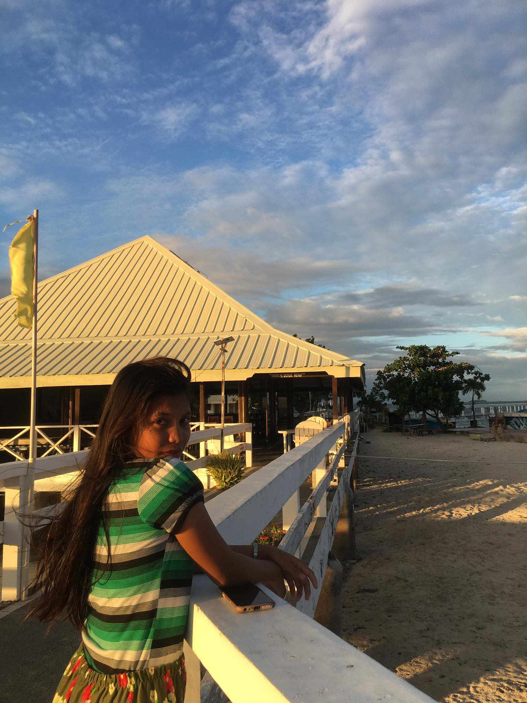
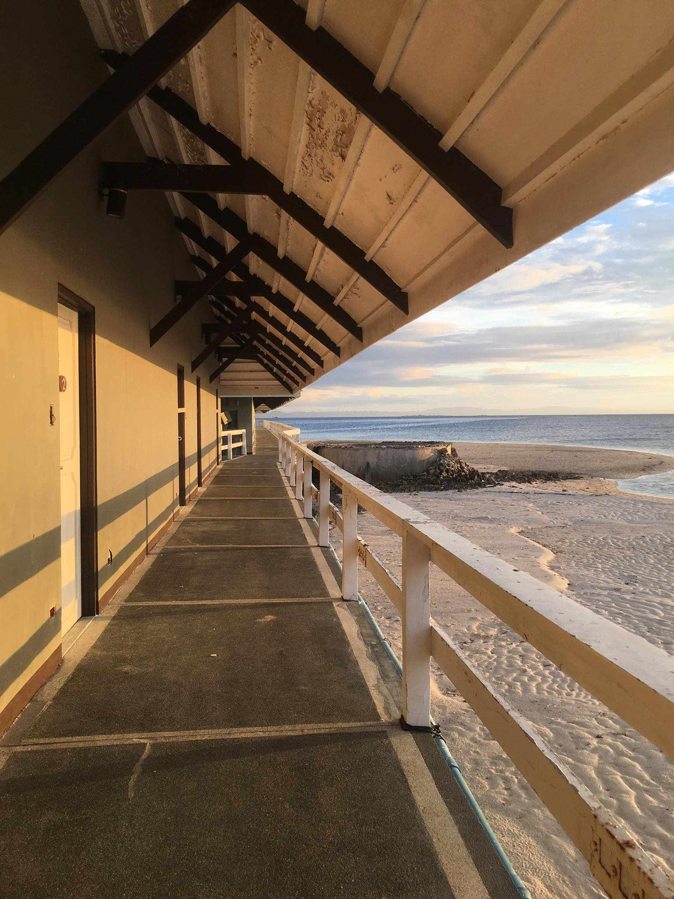
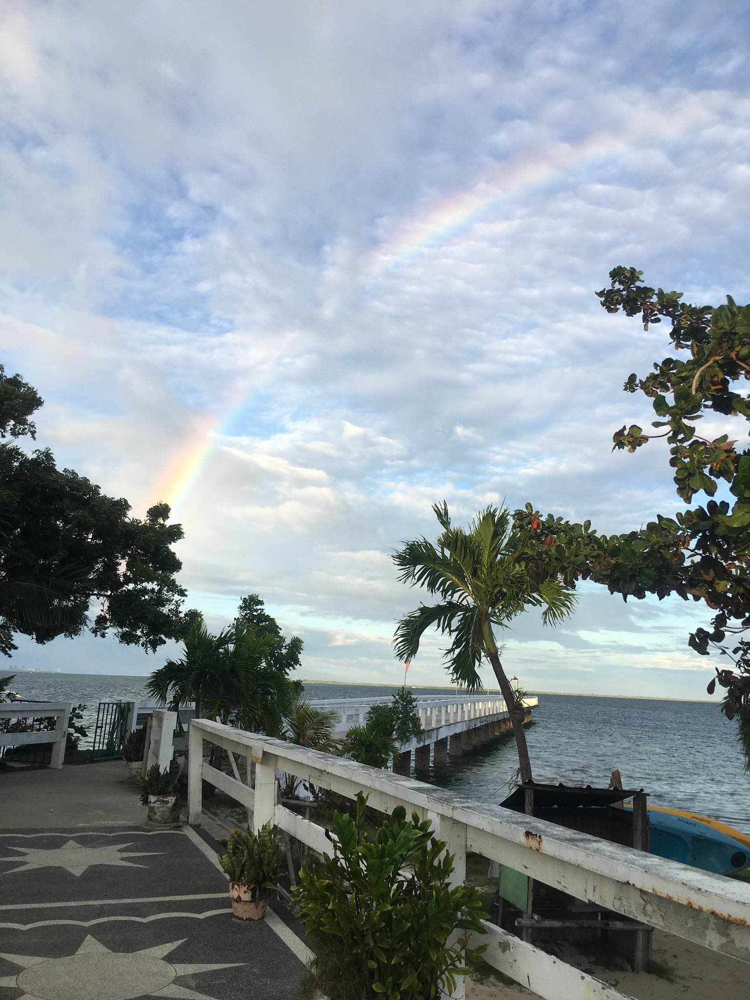
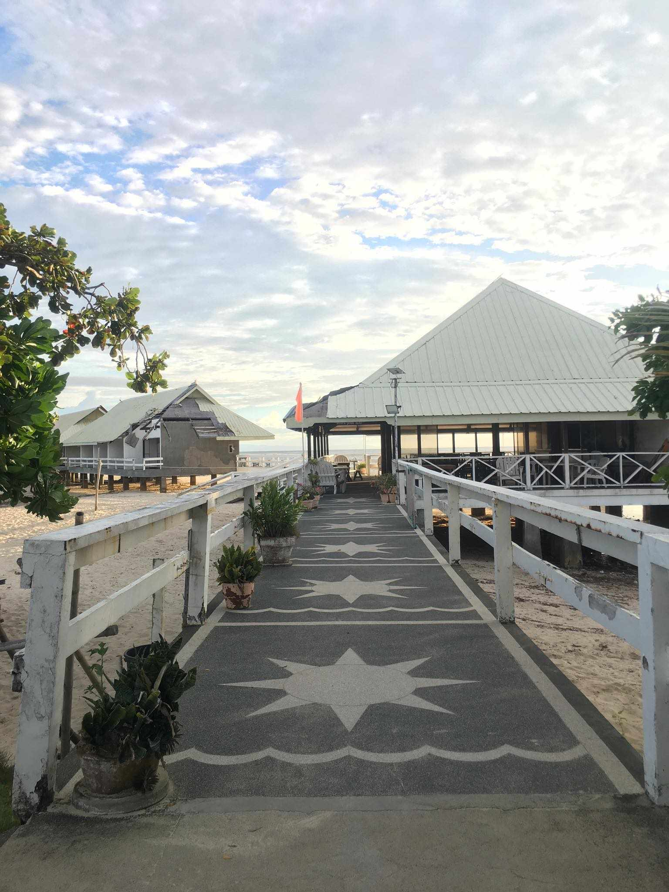

DESTINATION DELIGHTS: A VISUAL FEAST OF GILUTONGAN'S VIEWS
In the heart of Gilutongan, where turquoise waters meet the azure sky and verdant
landscapes unfold, a visual feast awaits. "Destination Delights" is not just a title,
it is an invitation to savor the captivating vistas that define the charm and allure of Gilutongan.
This essay embarks on a journey to explore the breathtaking views that make this destination a true
feast for the eyes. Gilutongan's views are anchored by the pristine embrace of the sea. The azure waters
that caress the shores create a mesmerizing dance of color and light. Standing on the shoreline, one
is treated to a panoramic spectacle where the sea meets the sky in a seamless union of blue.

ETERNAL BEAUTY: CAPTURING A PERSON IN THE ALLURE OF TOURISM..
In the world of travel, where landscapes unfold like tales and vistas beckon with enchantment,
there exists a unique allure the beauty encapsulated in the people who inhabit these destinations.
"Eternal Beauty" is not confined to the scenic splendors alone; it extends to the individuals whose
stories are etched into the fabric of tourism. This essay embarks on a journey to explore the profound
connection between a person and the enchanting tapestry of tourism. As we traverse the globe, each face
encountered becomes a chapter in the story of tourism. From the weathered lines of a seasoned guide to
the radiant smiles of local artisans, the diversity of faces reflects the rich mosaic of cultures that
contribute to the allure of a destination.

ISLAND SERENITY: A VISUAL ODYSSEY OF BEAUTY AND BLISS
In the vast expanse of the ocean, where the horizon meets the sky in an eternal embrace, there
exists an oasis of tranquility—the island. "Island Serenity" is not just a phrase; it is an invitation
to embark on a visual odyssey where beauty and bliss intertwine. This essay unravels the allure of an
island, exploring the enchanting landscapes, the rhythmic dance of waves, and the serene vistas that
make it a haven of serenity. As one approaches the shores of the island, the symphony of waves becomes
a lullaby that serenades the soul. The rhythmic dance of ocean currents, the gentle caress of sea breeze,
and the whispering of palm leaves create a harmonious melody, inviting visitors to surrender to the
soothing embrace of nature. Witnessing the sunrise from the island is a sacred ritual, a moment when
the sky transforms into a canvas of gold and pink. The first rays of sunlight bathe the landscape, casting
a warm glow that awakens the island from its nocturnal slumber. It is a spectacle that heralds the promise
of a new day in paradise.

GILUNTONGAN'S SPLENDOR: REVELING IN THE BREATHTAKING VIEWS OS ISLA GILUTONGAN,CORDOVA, CEBU..
Nestled in the azure embrace of the Philippine seas, Isla Gilutongan in Cordova, Cebu, emerges as a
treasure trove of natural wonders. "Gilutongan's Splendor" invites us to embark on a sensory journey,
where the symphony of waves, the vibrant hues of coral gardens, and the panoramic landscapes intertwine
to create an island paradise like no other. This essay is a celebration of the breathtaking views that
define the allure of Isla Gilutongan, a gem awaiting discovery.

ISLAND SERENITY: EXPLORING THE BEAUTY OF GILUNTONGAN, CORDOVA, CEBU..
In the heart of the Philippine archipelago lies a hidden gem, a paradise waiting to be
discovered—Gilutongan Island in Cordova. This enchanting destination, with its azure waters
and untouched landscapes, beckons travelers seeking a retreat into nature's embrace. Gilutongan,
a name that resonates with tranquility, is a testament to the unspoiled beauty that Mother Nature
graciously bestows upon this small piece of paradise. As one steps onto its shores, a sense of
serenity envelops the soul, leaving behind the hustle and bustle of the outside world. The crystal-clear
waters that surround Gilutongan are a canvas of ever-changing hues, from the gentle turquoise near
the shores to the deep sapphire farther offshore. Snorkeling in these pristine waters reveals a vibrant
underwater world—a kaleidoscope of coral gardens and marine life that dances to the rhythm of the
ocean currents.
Comments